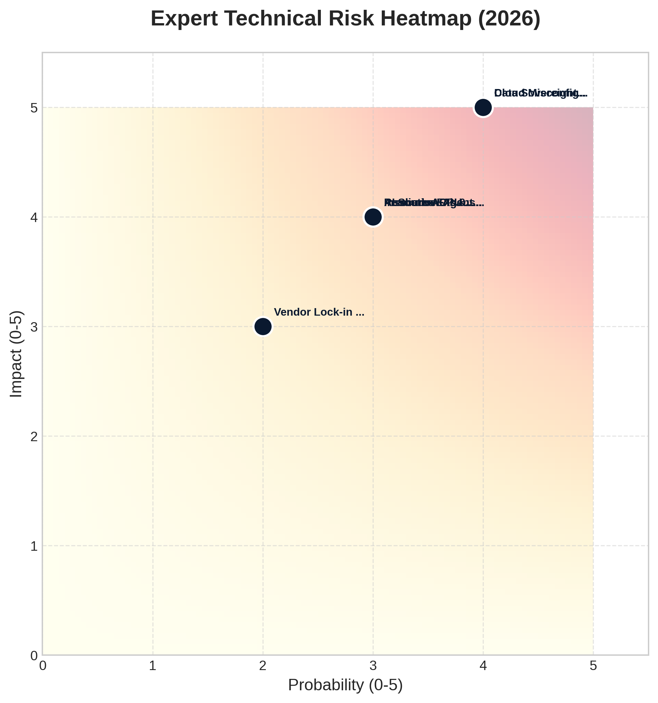

IA²E ARCHITECT ENGINE
{{ b_type }} ARCHITECTURE STRATEGY
Executive Review & Institutional Roadmap
TECHNICAL INTEGRITY SEAL
HASH: {{ integrity_seal }}
TIMESTAMP: {{ timestamp }}
01. Executive Summary
5Y Net Present Value
{{ currency_symbol }}{{ npv|format_currency }}
Payback (Months)
{{ roi_months }}
Compliance Score
{{ compliance_score }}%
{{ executive_narrative }}
Provider Comparison (Global Audit)
| Cloud Provider |
Monthly TCO ({{ currency }}) |
Efficiency Index |
{% for provider, cost in provider_comparison.items() %}
| {{ provider|upper }} |
{{ currency_symbol }}{{ cost|format_currency }} |
{{ "Optimized" if cost < total_monthly * 1.05 else "Standard" }} |
{% endfor %}
02. Constraints & Assumptions Audit
A deterministic normalization was applied to the initial business parameters to ensure technical feasibility and risk mitigation.
| Domain |
Input Value |
Normalized Profile |
{% for row in audit_table %}
| {{ row.domain }} |
{{ row.input }} |
{{ row.profile }} |
{% endfor %}
Simulated Load Dynamics (24h)

02.1 Resource Requirements Transparency
The following infrastructure specifications were derived through pure mathematical modeling based on the load profile above. Zero speculative estimation was used.
Compute Capacity
{{ raw_reqs.compute.vcpu|round(1) }} vCPUs
+ {{ raw_reqs.compute.ram_gb|round(1) }} GB RAM
Provisioned IOPS
{{ raw_reqs.storage.iops|round(0) }}
High-Performance Storage
Monthly Egress
{{ raw_reqs.networking.egress_gb|round(1) }} GB
Data Transfer Model
Cost Distribution by Resource Type
| Resource Domain |
Technical Driver |
Monthly Base Cost |
| Compute Instances |
{{ raw_reqs.compute.vcpu|round(1) }} vCPUs (m5 Instances) |
{{ currency_symbol }}{{ resource_breakdown.compute|format_currency }} |
| Storage & IOPS |
gp3 High-Performance EBS |
{{ currency_symbol }}{{ resource_breakdown.storage|format_currency }} |
| Networking / Egress |
{{ raw_reqs.networking.egress_gb|round(1) }} GB Data Out |
{{ currency_symbol }}{{ resource_breakdown.networking|format_currency }} |
03. Target Architecture Strategy
The system has selected the {{ architecture_pattern }} blueprint as the optimal structural foundation.
System Logical Blueprint

Bill of Materials (BOM)
| Subsystem |
Resource Type |
Sizing |
Est. Monthly |
{% for item in bom %}
| {{ item.name }} |
{{ item.type }} |
{{ item.size }} |
{{ currency_symbol }}{{ item.cost|format_currency }} |
{% endfor %}
| Total Infrastructure Monthly TCO |
{{ currency_symbol }}{{ total_monthly|format_currency }} |
04. Risk Register & Recommendations
The following risks were identified during the technical audit phase based on the stated sensitivity and availability targets. Probability and Impact scores are based on 2026 Cloud Threat Benchmarks.
Technical Risk Heatmap (2026 Matrix)

Quadrant 4: Critical Exposure (High Prob/Impact) | Quadrant 1: Managed Risk
Expert Technical Audit Checklist
| Threat / Risk Cluster |
P/I/S |
Exposure Source |
Professional Mitigation |
{% for audit in technical_audit %}
15 %}style="background: #FFF1F2;"{% endif %}>
| {{ audit.name }} |
{{ audit.probability }}/{{ audit.impact }}/{{ audit.raw_score }} |
{{ audit.critical_resource }} |
{{ audit.mitigation }} |
{% endfor %}
Institutional Recommendation
{{ executive_narrative }}
05. Advanced Scalability & Pattern Strategy
Based on the Pattern Knowledge Base (V23) and the calculated traffic profile, the following expert scaling patterns are recommended to achieve enterprise-grade resilience.
{% if enterprise_patterns %}
{% for pattern in enterprise_patterns %}
{{ pattern.name }} (Confidence: {{ (pattern.confidence * 100)|int }}%)
{% if pattern.is_irreversible %}
IRREVERSIBLE ACTION
{% endif %}
Rationale: {{ pattern.rationale }}
{% if pattern.lock_in %}
Lock-in Risk: {{ pattern.lock_in }}
{% endif %}
{% for k, v in pattern.impact.items() %}
{{ k|replace('_', ' ')|capitalize }}
{{ v }}
{% endfor %}
{% endfor %}
{% else %}
Standard architectural patterns are sufficient for the current workload profile.
{% endif %}
Pattern Comparison & Trade-off Matrix
Quantitative comparison of recommended vs alternative patterns based on implementation risk and cost.
| Dimension |
Complexity |
Infra Cost |
Impl. Time |
Scalability |
{% if tradeoff_matrix and tradeoff_matrix.matrix %}
{% for p_id, p_data in tradeoff_matrix.matrix.items() %}
0 %}style="background: #ECFDF5; border-left: 4px solid #10B981;"{% endif %}>
| {{ p_id|upper }} |
{{ p_data.complexity }}/10 |
{{ p_data.infra_cost }}x |
{{ p_data.impl_time_weeks }} weeks |
{{ p_data.scalability }} |
{% endfor %}
{% endif %}
06. Appendices
Methodology
All calculations follow standard NPV/ROI formulas with a 10% WACC assumption. Pricing is derived from current AWS region benchmarks (Feb 2026).
State Audit Trail (JSON Fragment)
{{ state_json_sample }}
Generado por Architecture Decision Engine